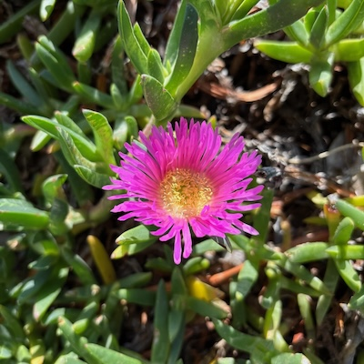

"Jesus increased in wisdom and stature, and in favor with God and man." - John 2:52
This website was designed to bring together into one place some resources to help as I learn new concepts, teach my family and other youth, and share with others.



About Me
I am a wife and a mom of 4. I enjoy being with my family, going on walks with friends, the beach, the temple, reading and learning. I love studying the gospel of Jesus Christ and helping others to love it too. I currently work with youth and am always looking for fun ideas to do with them and with my kids. This site is a compilation of some of my favorite ideas and things I've learned surrounding the gospel of Jesus Christ.